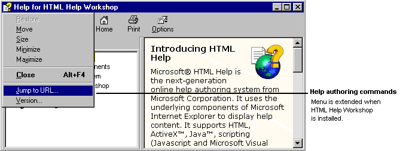

|
| ||
|
| ||
Microsoft Corporation
June 23, 1998
When you open a compiled help (.chm) file or start the HTML Help ActiveX® control in an HTML file, the control looks to see if HTML Help Workshop is set up. If HTML Help Workshop is present, the following additional functionality is provided for help authors:

Did you find this material useful? Gripes? Compliments? Suggestions for other articles? Write us!
© 1999 Microsoft Corporation. All rights reserved. Terms of use.